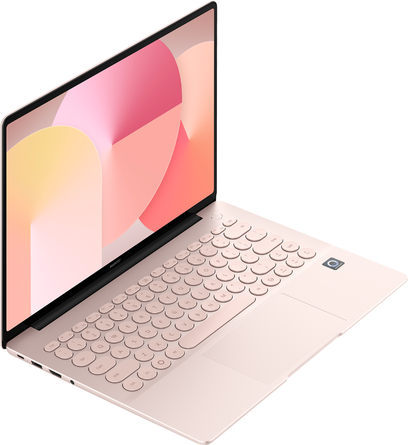
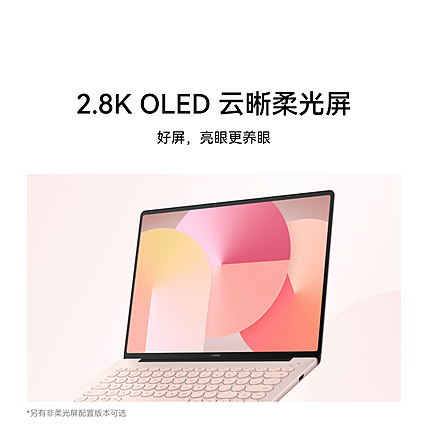
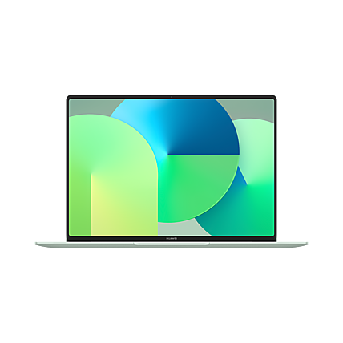

大学新生选笔记本：先看学习任务与携带需求
开学季选笔记本，很多新生会问：这台电脑主要用来上哪些课、跑什么软件？预算6000元（用户自述预算）怎么花在刀刃上？这篇从学习场景出发，帮你理清HUAWEI MateBook 14 鸿蒙版的三个关键卖点，并说明哪些信息还需要你进一步确认。
大学新生的第一台笔记本，往往要同时应付课堂笔记、论文写作、小组展示和宿舍里的多设备协同。HUAWEI MateBook 14 鸿蒙版是否适合你，建议先围绕三个问题判断：每天背去教室重不重？屏幕看文献写作业够不够舒服？系统和你常用的软件能不能对上？
第一，携带与续航。这台机器厚度14.5 mm，重量约1.33 kg（圆键盘含电池）或约1.32 kg（方键盘含电池），实际重量会因配置、制造工艺和测量方法不同而有所差异。电池为锂聚合物，额定容量70 Wh。对需要教室、图书馆、宿舍来回跑的新生来说，这个尺寸和重量属于可以日常背包携带的范围，但具体手感建议到线下门店实际拿一下。
第二，屏幕与学习任务。它配备14.2英寸OLED抗反射屏，3:2屏幕比例，分辨率2880×1920，243 PPI，屏占比91%，支持10点触控。3:2比例在纵向显示文档、网页和表格时更友好，写论文、看PDF、做PPT时可以减少滚动。屏幕色准平均DeltaE < 1，支持多屏同色显示，但多屏同色效果会因应用软件、屏幕设置、使用习惯和环境等因素不同而略有差异，请以实际体验为准。
第三，系统与软件适配。这台产品搭载HarmonyOS 6。你提到的鸿蒙和WPS是重点：WPS在鸿蒙上的具体功能完整度、插件兼容性以及专业课程软件（如编程、绘图、统计类工具）是否可用，目前输入资料没有给出明确适配清单，属于待确认信息。建议在购买前通过华为商城、京东华为自营或线下门店，用你的课程软件清单逐项核实。
选购建议：如果你的主要任务是文档、网页、影音和轻度多设备协同，且预算在6000元（用户自述预算）附近，可以重点比较这台机器的屏幕、重量和系统体验；如果课程涉及特定专业软件，先把软件适配确认清楚再下单。价格方面，输入中没有可用的报价或优惠信息，正文不写到手价，建议以华为商城、京东华为自营或线下门店的实时页面为准。
最后提醒：闲鱼等二手渠道价格和成色差异大，不作为新机选购的价格参考；小红书内容可看使用场景分享，但产品参数请以官方页面为准。如果你不确定自己的专业软件是否适配，欢迎带着课程软件清单来咨询，我们帮你一起核对。

HUAWEI MateBook 14（鸿蒙版）多彩配色外观 · 来源：华为官网，经 ima 产品图片索引
HUAWEI MateBook 14（鸿蒙版）OLED屏幕展示 · 来源：华为官网，经 ima 产品图片索引
手机协同桌面展示 · 来源：华为官网，经 ima 产品图片索引带着你的课程软件清单来咨询，一起确认适配再选型。
完整依据与核验
二、知识库依据：
产品事实：
1.
产品型号：HUAWEI MateBook 14（鸿蒙版）
事实点：操作系统：HarmonyOS 6
资料标题：HUAWEI MateBook 14／产品事实
来源：https://consumer.huawei.com/cn/harmonyos-computer/matebook-14-harmonyos-version/specs/
核验状态：已核验
2.
产品型号：HUAWEI MateBook 14（鸿蒙版）
事实点：尺寸与重量：长度
312.6 mm
宽度
226.8 mm
厚度
14.5 mm
重量
约 1.33 kg（圆键盘含电池）
约 1.32 kg（方键盘含电池）
*实际机身重量根据配置、制造工艺、测量方法的不同可能有所差异。
资料标题：HUAWEI MateBook 14／产品事实
来源：https://consumer.huawei.com/cn/harmonyos-computer/matebook-14-harmonyos-version/specs/
核验状态：已核验
3.
产品型号：HUAWEI MateBook 14（鸿蒙版）
事实点：屏幕：尺寸
14.2 英寸
*显示屏采用圆角设计，按照标准矩形测量时，屏幕的对角线长度是 14.2 英寸（实际可视区域略小）。
类型
OLED（抗反射屏）
屏占比
91%
屏幕比例
3:2
分辨率
2880 × 1920，243 PPI
刷新率
静态刷新率：60 Hz / 120 Hz
动态刷新率：智能动态调节（默认）
亮度
标准版：
典型亮度：450 nits
峰值亮度：500 nits
柔光版：
典型亮度：500 nits
峰值亮度：600 nits
色域
100% sRGB（典型值）、P3 广色域（典型值）
色准
平均 DeltaE < 1，支持多屏同色显示
*多屏同色，根据应用软件、屏幕设置、使用习惯、环境等因素不同，可能略有差异，请以实际体验为准。购买时最新支持的设备机型请见官网或咨询华为商用客户服务专线（950803）。
对比度
1000000:1（典型值）
可视角度
178°（典型值）
触摸屏
支持 10 点触控
资料标题：HUAWEI MateBook 14／产品事实
来源：https://consumer.huawei.com/cn/harmonyos-computer/matebook-14-harmonyos-version/specs/
核验状态：已核验
4.
产品型号：HUAWEI MateBook 14（鸿蒙版）
事实点：电池：材料
锂聚合物
容量
70 Wh（额定容量）
资料标题：HUAWEI MateBook 14／产品事实
来源：https://consumer.huawei.com/cn/harmonyos-computer/matebook-14-harmonyos-version/specs/
核验状态：已核验
实时报价依据与计算：
报价边界：
四、核验结果：
1.
项目：产品事实
结果：通过
说明：已关联 4 条 ima 原文事实，配置与测试限定需随正文保留
2.
项目：图片型号
结果：通过
说明：选图均来自已关联型号的 ima 图片索引；原图按比例放置
3.
项目：营销合规
结果：通过
说明：未命中当前绝对化与虚假承诺规则
4.
项目：价格
结果：待确认
说明：尚无已核实最低报价；不得在文案中承诺确定到手价
5.
项目：语义核验
结果：通过
说明：模型已辅助对照事实、限制条件与文本；不替代来源记录
6.
项目：发布标识
结果：待确认
说明：发布时按适用规则标明广告及AI生成/辅助内容，并使用平台标识功能